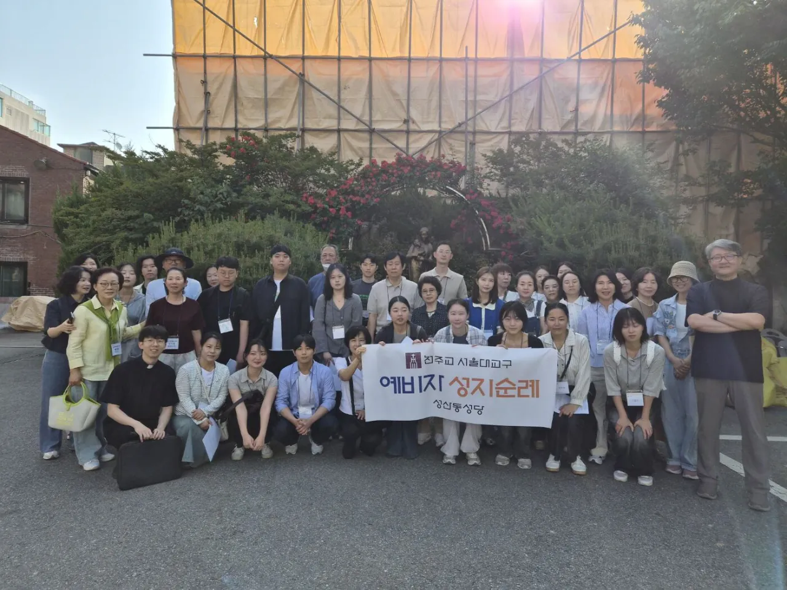
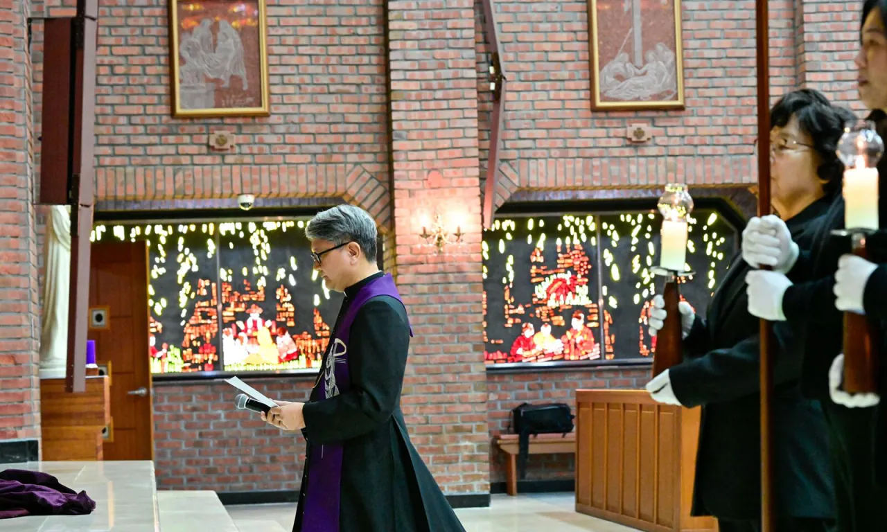
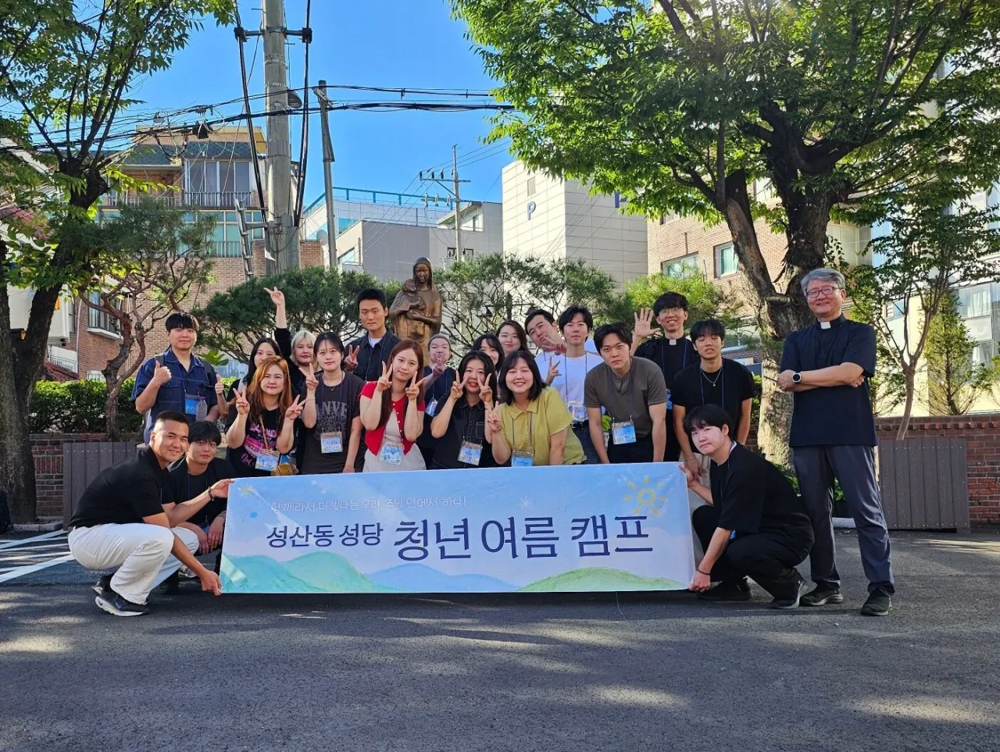
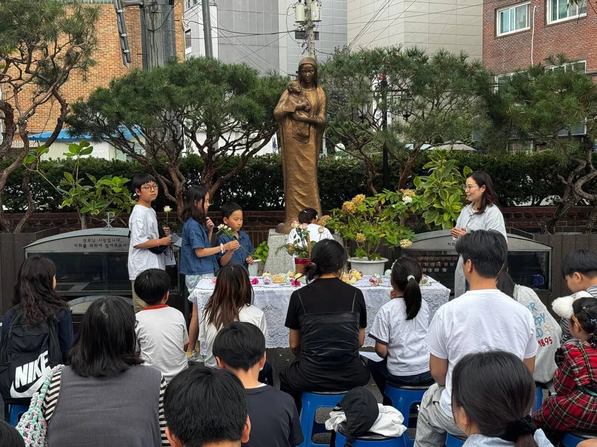
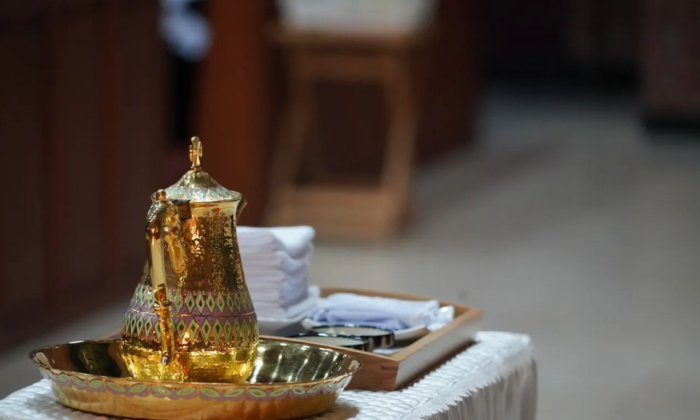

이번 주 주보
10월 25일 주보
연중 제30주일
10월 24일에 올렸습니다.
주보 보기Invitation · 초대말씀
천주교 성산동성당에 오신 모든 분을 환영합니다. 오늘의 발걸음이 영원을 함께하는 시작이기를 바랍니다.
대성전사진 4장
01Mass
토요일 저녁 6시 미사는 주일미사입니다. 고해성사는 매 미사 전에 드릴 수 있습니다.
8월 1일부터 주일 미사 시간이 바뀌었습니다. 토요일 오후 3시 어린이미사는 주일 오후 3시 가정미사로 옮겼고, 주일 10시 30분 미사는 교중미사로 드립니다.
미사 시작 10분 전에 도착해 마음을 가다듬고, 휴대전화는 꺼 두세요.
이곳을 방문하신 모든 분들은 그 첫 걸음을 시작하신 분들입니다. 하면 그 다음은 주님께서 여러분과 함께 하실 겁니다.
그 길은 빠르지 않을지 모르지만 멀리 갈 수 있는 길이고 영원에까지 이르는 길입니다.
빨리 가려면 혼자 가고, 멀리 가려면 함께 가라. 초대말씀 중에서
02Community
성탄과 사순, 세례식과 순례까지. 본당 공동체가 함께 보낸 한 해입니다.





Video
23초, 소리 없음. 성탄과 세례식, 십자가의 길, 성지 순례, 청년 캠프를 담았습니다.
03Sacraments
매달 정해진 때에 드리는 전례입니다. 가까운 날부터 차례로 적었습니다.
매월 마지막 주일
주일 오후 2시
매월 마지막 주일에 있습니다. 8월과 12월에는 없습니다.
매월 마지막 수요일
수요일 오전 10시 45분
매월 마지막 수요일, 성당에서 출발해 가정을 찾아갑니다.
매월 마지막 토요일
토요일 오전 10시 45분
마지막 주 토요일에 합니다. 8월과 12월에는 없습니다.
매월 첫 주일
주일 저녁 6시
매월 첫 주일 저녁 6시 미사에서 성수를 축복합니다.
매월 첫 목요일
목요일 저녁 7시 30분
매월 첫 목요일 저녁 미사가 끝난 뒤에 있습니다.
매월 첫 토요일
토요일 오전 10시
매월 첫 토요일 오전 10시 미사로 드립니다. 연중 시기에 해당합니다.
신청 방법은 사무실(02-6387-1784)에 문의해 주세요.
04News
이번 주 주보와 본당의 새 소식입니다.
이번 주 주보
10월 25일 주보
10월 24일에 올렸습니다.
주보 보기05Welcome
천주교 신자가 되려면 세례를 받기 전에 교리와 교회 생활을 배웁니다. 이 과정을 예비신자 교리라고 하며, 6개월 이상 매주 한 번 2시간씩 함께합니다.
본당 사무실에 입교 신청서를 냅니다.
신부님과 면담한 뒤 예비신자 교리반이 정해집니다.
6개월 이상, 매주 한 번 2시간씩 교리와 교회 생활을 배웁니다.
세례식에서 하느님의 자녀로 새로 태어나 신자들과 함께 걸어갑니다.
일정은 사정에 따라 바뀔 수 있으며, 바뀌면 주보와 홈페이지로 알려 드립니다.
입교 문의 · 사무실02-6387-1784From abroad +82-2-6387-1784
찾는 답이 없으면 사무실로 전화해 주세요. 월요일은 쉽니다.
사무실02-6387-1784From abroad +82-2-6387-1784
누구나 미사에 함께할 수 있습니다. 미사 시작 10분 전에 도착해 휴대전화를 꺼 두세요. 영성체는 세례를 받은 신자만 모실 수 있습니다.
매월 마지막 주일 오후 2시에 있습니다. 8월과 12월에는 없습니다. 준비할 서류와 신청 방법은 사무실에 문의해 주세요.
본당 사무실에서 안내해 드립니다. 아래 사무실 시간을 확인하고 전화해 주세요.
마지막 주 토요일 오전 10시 45분에 합니다. 8월과 12월에는 없습니다.
매월 마지막 수요일에 병자 영성체가 있습니다. 오전 10시 45분에 성당에서 출발합니다. 방문을 원하시면 사무실에 신청해 주세요.
06Visit
사무실 시간월요일은 쉽니다.
| 월요일 | 쉽니다 |
|---|---|
| 화요일 | 09:00 – 19:30 |
| 수요일 | 09:00 – 18:00 |
| 목요일 | 09:00 – 19:30 |
| 금요일 | 09:00 – 18:00 |
| 토요일 | 09:00 – 19:15 |
| 주일 | 07:45 – 19:15 |